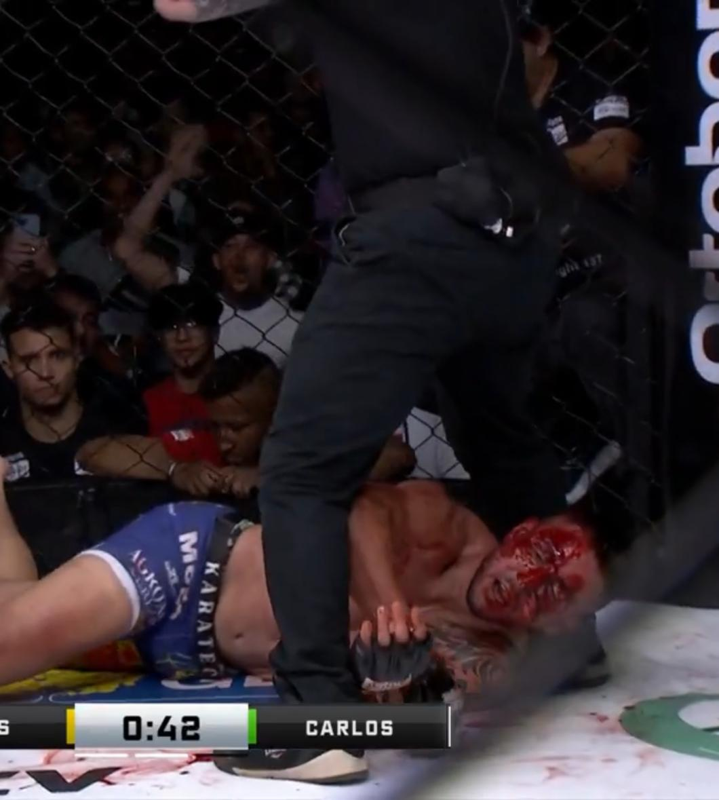

Dossiê interativo sobre a violação das regras e ética esportiva no Jungle Fight
Lucas é atingido por uma canelada ilegal enquanto estava com três apoios no chão, causando ferimento grave.
Médico avalia Lucas sem seguir protocolos neurológicos completos, apenas colocando gaze no ferimento.
"Eu chutei por raiva, não por maldade" - Adversário confirma intenção emocional no golpe.
Áudio revela organizador do evento pressionando Lucas a continuar a luta.
Caso ganha repercussão nacional com matéria em rede nacional de TV.
Segundo o regulamento oficial do Jungle Fight (baseado nas Unified Rules of MMA):
Nenhuma dessas regras foi seguida corretamente.
Análise frame a frame mostra:
O próprio árbitro admitiu em áudio: "Tava com 3 apoios... caralho"
Imagem mostra a extensão do ferimento causado pelo golpe ilegal
Estado claro de concussão imediatamente após o golpe
Atleta com olhos fechados e visão totalmente obstruída
Médico focando apenas no ferimento, ignorando sintomas neurológicos